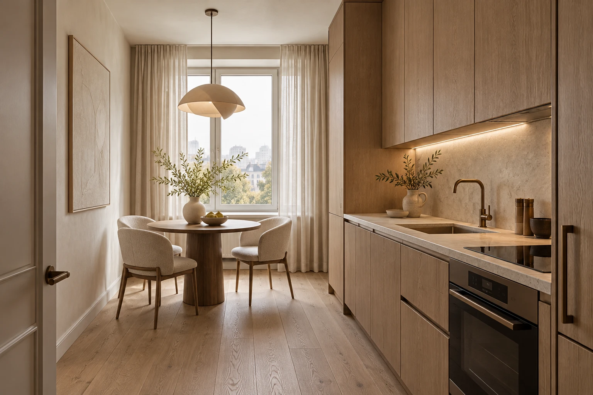
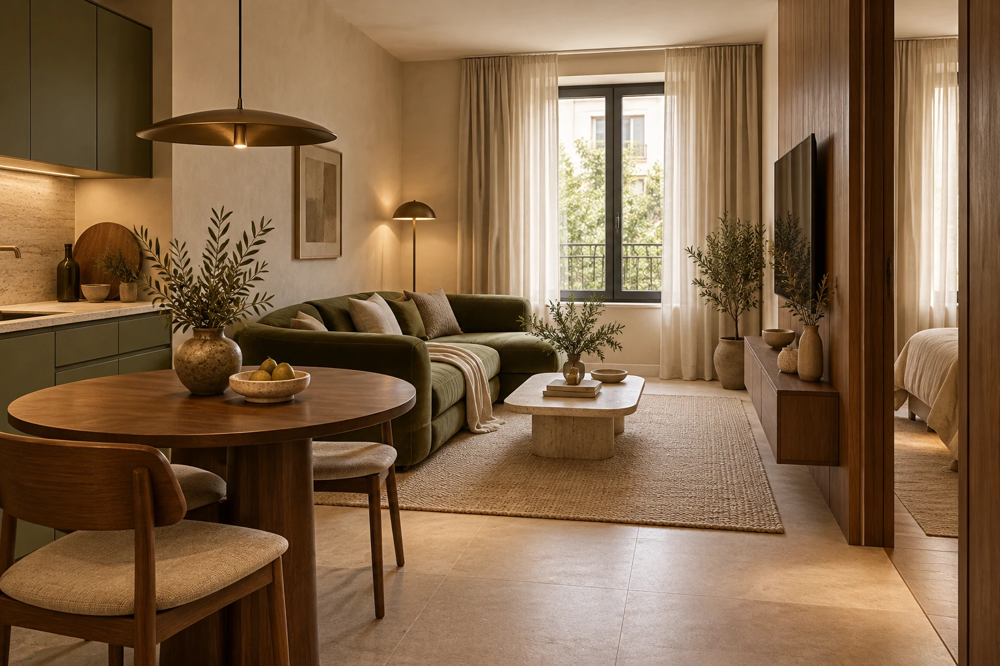
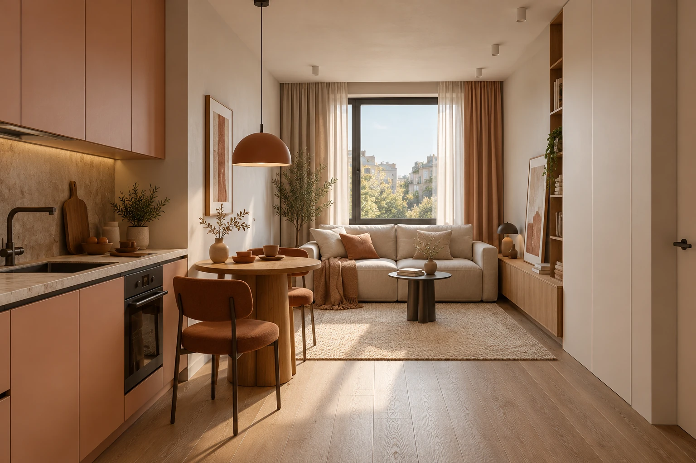
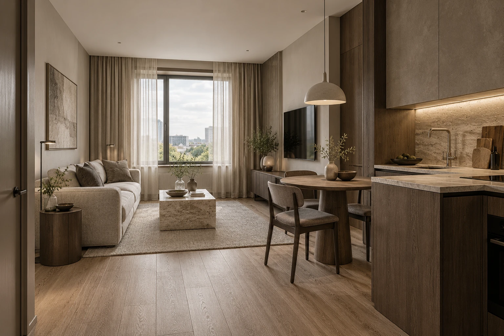
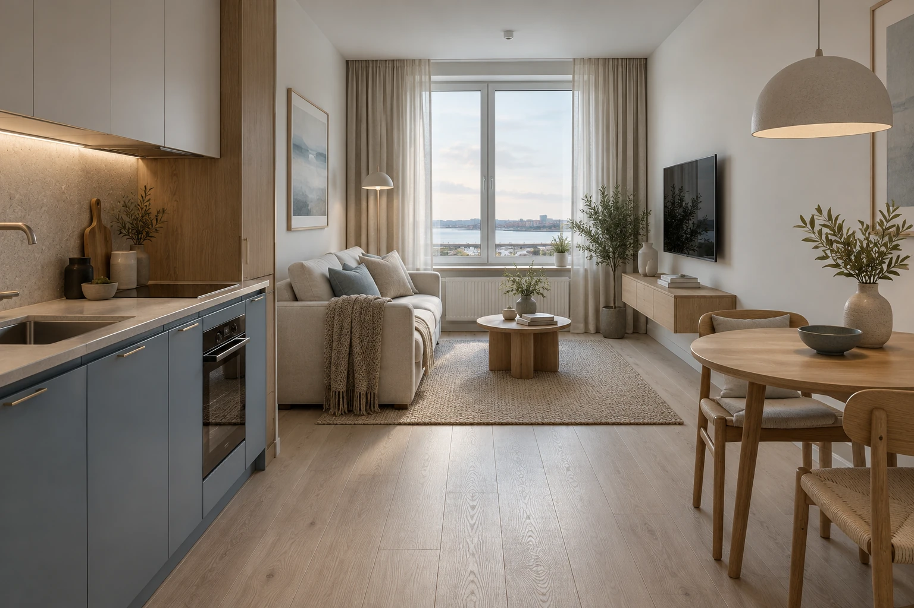

14Москва / Premium conceptMoscow / Premium concept
Level СелигерскаяLevel Seligerskaya34,8 м²34.8 m²
Тихая роскошьQuiet luxury
Светлый минимализмLight minimalism Отдельная спальняSeparate bedroom
Safonov Interiors / Концепции 2026Safonov Interiors / Concepts 2026
Интерьеры, в которых тихая роскошь начинается с пропорций, света и ощущения дома. Новая московская коллекция — пять планировок, пять самостоятельных историй.Interiors where quiet luxury begins with proportion, light and the feeling of home. The new Moscow collection brings together five layouts and five individual stories.
Новая коллекция / МоскваNew collection / Moscow
01 — 05 / PREMIUM
От камерной квартиры до светлой резиденции. Камень, дерево, тактильный текстиль и спокойная архитектура — в масштабе реальных московских планировок.From an intimate apartment to an airy residence. Stone, timber, tactile textiles and calm architecture, considered at the scale of real Moscow layouts.
Самостоятельная подборка по опубликованным планировкам застройщиков. Все интерьеры — авторские AI-концепции; исходные планы и ссылки на квартиры открываются внутри кейсов.An independent collection based on publicly listed developer layouts. All interiors are original AI concepts; source plans and apartment links are included in each case.
Портфолио / Избранные историиPortfolio / Selected stories
Москва Premium и коллекция компактных квартир. Палитра, материалы и логика жизни — в каждом кейсе.Moscow Premium and the compact apartment collection. Each case brings together a palette, materials and a way of living.
Показано проектов:Projects shown: 18

14Москва / Premium conceptMoscow / Premium concept
Светлый минимализмLight minimalism Отдельная спальняSeparate bedroom

15Москва / Premium conceptMoscow / Premium concept
Современный интерьер с оливковым акцентомContemporary with an olive accent Отдельная спальняSeparate bedroom
 16
16
Москва / Premium conceptMoscow / Premium concept
Современная классика в тёплой палитреWarm contemporary classic Отдельная спальняSeparate bedroom
 17
17
Москва / Premium conceptMoscow / Premium concept
Тёплый архитектурный минимализмWarm architectural minimalism Две спальниTwo bedrooms
18
Москва / Premium conceptMoscow / Premium concept
Светлый современный интерьерLight contemporary interior Отдельная спальняSeparate bedroom
 01
01
Мягкий современныйSoft contemporary Отдельная спальняSeparate bedroom

02Тёплый минимализмWarm minimalism Отдельная спальняSeparate bedroom

03Современный с фактурамиTextured contemporary Отдельная спальняSeparate bedroom
 04
04
Природный минимализмNatural minimalism Отдельная спальняSeparate bedroom
 05
05
Спокойный городскойCalm urban Отдельная спальняSeparate bedroom
 06
06
Тёплая средиземная палитраWarm Mediterranean palette СтудияStudio
 07
07
Семейный скандинавскийFamily Scandinavian Две спальниTwo bedrooms
Две отдельные комнаты позволяют разделить взрослый и детский ритмы. Спокойная зелёная палитра, берёза и закрытое хранение объединяют семейную квартиру.Two separate rooms accommodate adult and child routines. A calm green palette, birch and closed storage give this family home a coherent feel.
Посмотреть проектView project 08
08
Мягкий городскойSoft urban Отдельная спальняSeparate bedroom

09Светлый северныйLight Nordic Отдельная спальняSeparate bedroom
 10
10
Спокойный натуральныйCalm natural Отдельная спальняSeparate bedroom
 11
11
Компактный функциональныйCompact & functional СтудияStudio
 12
12
Тёплый современныйWarm contemporary СтудияStudio
 13
13
Практичный современныйPractical contemporary Отдельная спальняSeparate bedroom
Подход к пространствуA way of thinking about space
Премиальность рождается из продуманного сценария: где удобно готовить, как проходит свет, что видно из гостиной и куда исчезают повседневные вещи.A refined interior grows from considered routines: a comfortable place to cook, the movement of light, the view from the living room and a home for everyday belongings.
Понять, где готовить, работать и отдыхать. Сохранить логику исходной квартиры, проверить размеры на этапе обмеров.Understand where to cook, work and relax. Respect the source layout and verify dimensions at the measured survey stage.
Тихая база, натуральные фактуры и один выразительный акцент. Красота, которой достаточно места для жизни.A quiet base, natural textures and one expressive accent. Beauty with room left for everyday life.
Соединить общий, рабочий и вечерний свет. Выбрать текстиль, дерево и камень, к которым хочется прикоснуться.Combine ambient, task and evening light. Choose textiles, timber and stone that invite touch.